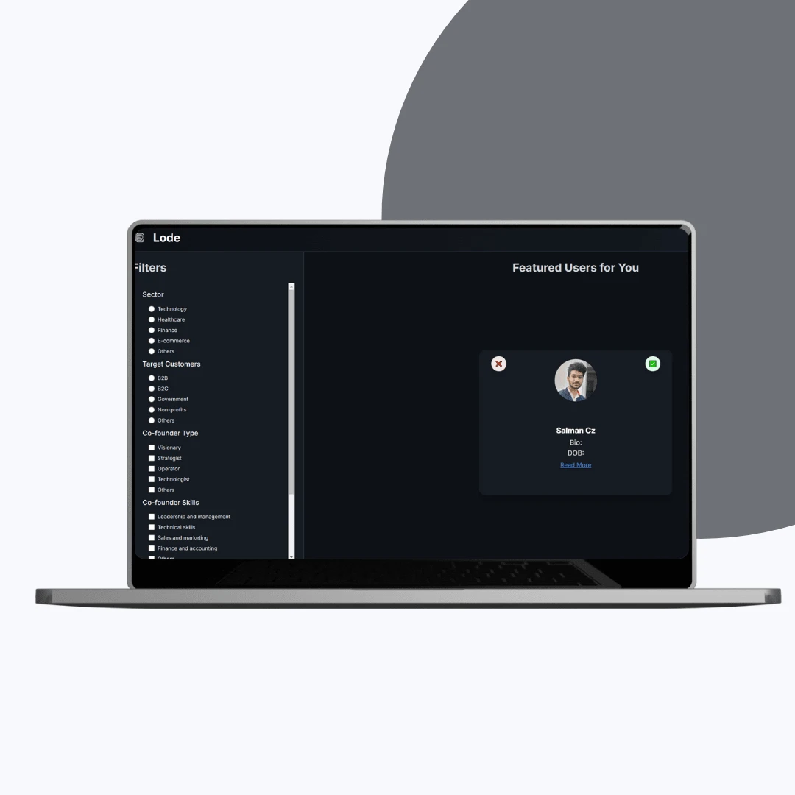

A co-founder matchmaking MVP for Lode, built and shipped ahead of schedule.
Lode is a startup platform that connects aspiring founders with potential co-founders through algorithm-based matching and secure identity verification. I designed, built, and hosted the MVP on a React, Node.js, and AWS stack, delivering it ahead of the timeline.

The objective: validate co-founder matchmaking with a real product
Lode set out to prove that founders could find the right co-founder through structured matching rather than luck. The goal was an MVP that validated the concept without overbuilding: a fast, scalable platform carrying only the core functionality that mattered. That meant a clean interface for creating and browsing profiles, an accurate matchmaking engine driven by skills and goals, and secure onboarding with identity verification so users could trust who they were connecting with.


The build: React, Node.js, and AWS behind a matching engine
I led the design, development, and hosting on a React and Node.js stack deployed to AWS. I designed the matchmaking logic around startup roles and interests, developed modular front-end components so the design could iterate quickly, and integrated identity verification to give the platform credibility. A guided sign-up and onboarding flow walks new users into the product, and the AWS architecture was set up for scalability from day one.


The result: shipped ahead of schedule
The engagement ran through six phases, from discovery and UI/UX design to MVP development, the matchmaking algorithm, hosting, and launch. The finished platform gave Lode a working foundation to test its concept with real founders. In the words of Lode CEO Mithul, the team delivered it way ahead of time, and the budget was outstanding.
